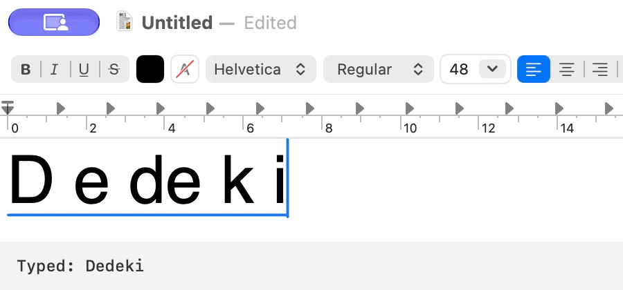

A Bug When Typing “Dedekind” with the macOS Chinese Input Method
Table of Contents
1. What Happened
Chinese is my first language, but I write a lot in both Chinese and English. When I need an English word in the middle of a Chinese sentence, I usually can't be bothered to switch input methods. Most of the time this works just fine. Sometimes the Chinese input method even catches a spelling mistake for me.
Lately I've been studying set theory, which means I keep typing the name “Dedekind”. That is how I stumbled across this particular bug:

I type Dedeki. So far, so good. I press n to make Dedekin, and both the text I am composing and the input method's candidate window disappear. I press the final d, and both come back, with the whole name intact.
I tried it again with a lowercase initial d. I could type dedekind from start to finish without anything disappearing. I have no idea why the capital letter makes a difference, or why the input method takes particular exception to the penultimate letter of a dead mathematician's name.
2. A Generalization
My first suspicion was that Apple had done this on Cantor's orders. On reflection, I think I understand Apple's predicament. How else was it supposed to help me revise Dedekind cuts?
A Dedekind cut splits the rationals into a left set and a right set. Once the left set is given, the right set is its complement. So when I type Dedekin and the whole thing vanishes, I should have the courage of my mathematical convictions: the left set exists, so the right set exists too. One more d and there it is.
Apple could simply have let me type the man's name. Instead it made sure I understood his work. How very noble of it.
P.S. I have already reported the bug through Apple's macOS feedback form.